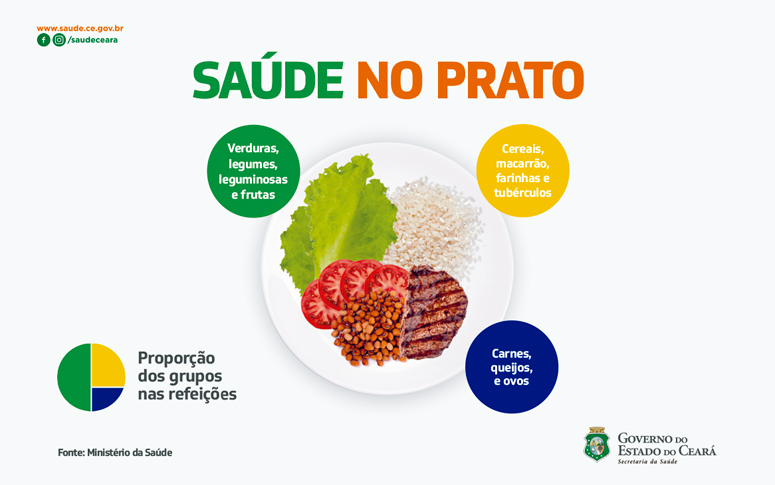
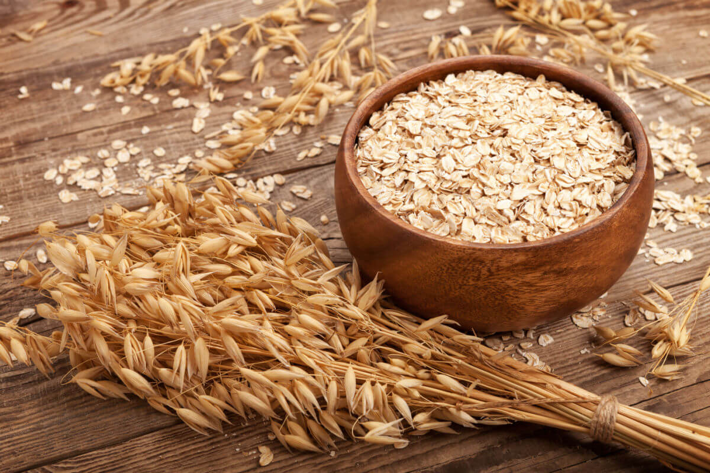

Objetivo da Campanha

A Importância da Alimentação Saudável
A alimentação está entre um dos principais pilares da saúde. Os alimentos são a maior e melhor fonte de nutrientes essenciais para o bom funcionamento do corpo e, consequentemente, contribuem para uma maior qualidade de vida e bem-estar. Por esse motivo é tão importante ter uma alimentação adequada e saudável. É a partir desse hábito que começa a prevenção de doenças como: hipertensão arterial, diabetes, obesidade, câncer, entre outras.
Uma alimentação adequada e saudável, com base nas recomendações do Guia Alimentar para a População Brasileira , produzido pelo Ministério da Saúde, orienta que se dê sempre preferência aos alimentos in natura ou minimamente processados e às preparações culinárias no lugar dos alimentos ultraprocessados. Sendo que os alimentos in natura ou minimamente processados, em grande variedade e predominantemente de origem vegetal, devem ser a base da alimentação.
Os alimentos in natura ou minimamente processados podem ser incluídos nas três principais refeições do dia: café da manhã, almoço e jantar. Com relação ao café da manhã, a variedade é grande, incluindo o consumo de preparações à base de cereais ou de tubérculos e o consumo de ovos. As combinações devem refletir a variedade e preferências regionais exemplificadas como a inclusão do cuscuz e da tapioca. Conheça algumas opções de cardápio:

Já no almoço e no jantar, o Guia Alimentar para a População Brasileira incentiva que a combinação de arroz e feijão esteja sempre presente. Os legumes e as verduras podem ser inseridos no cardápio na maior variedade possível, incluindo a preparação de diversas formas aumentar e diversificar o consumo desses alimentos (crus em saladas ou em preparações cozidas ou refogadas) e as frutas podem entrar nas saladas ou como sobremesa.

A alimentação saudável é um dos pilares fundamentais para a manutenção da saúde e bem-estar. A Prefeitura de Fortaleza, ao lançar a campanha "A saúde começa com uma alimentação saudável", destaca a importância de adotar bons hábitos alimentares para prevenir doenças e melhorar a qualidade de vida.
Benefícios de uma Alimentação Saudável
Prevenção de Doenças: Uma dieta equilibrada e rica em nutrientes é essencial para prevenir doenças crônicas como obesidade, diabetes e doenças cardiovasculares. Alimentos ricos em fibras, vitaminas e minerais ajudam a manter o corpo funcionando de maneira eficiente e a combater inflamações.
Fortalecimento do Sistema Imunológico: Consumir uma variedade de frutas, legumes e verduras fornece ao corpo os antioxidantes necessários para fortalecer o sistema imunológico. Isso ajuda a proteger o organismo contra infecções e doenças.
Aumento da Energia e Disposição: Alimentos saudáveis fornecem a energia necessária para as atividades diárias. Carboidratos complexos, proteínas magras e gorduras saudáveis são fontes de energia sustentada, evitando picos e quedas bruscas de açúcar no sangue.
Melhora da Saúde Mental: Estudos mostram que uma alimentação balanceada pode ter um impacto positivo na saúde mental. Nutrientes como ômega-3, encontrados em peixes gordurosos, e vitaminas do complexo B, presentes em grãos integrais, são essenciais para a função cerebral e podem ajudar a reduzir os sintomas de depressão e ansiedade.
Aumento da Longevidade: Adotar uma dieta rica em nutrientes e pobre em alimentos processados pode aumentar a longevidade. Populações que seguem dietas tradicionais, como a dieta mediterrânea, têm taxas mais baixas de doenças crônicas e uma expectativa de vida mais longa.
Alimentos saudáveis para o consumo, e seus benefícios

Melhora a saúde cardiovascular

Fortalece o sistema imunológico
Aumenta a energia e disposição

Aumenta a produtividade no dia, a dia
O que é o IMC?
O Índice de Massa Corporal (IMC) é uma medida utilizada para avaliar se uma pessoa está dentro do peso ideal em relação à sua altura. O cálculo do IMC é feito dividindo o peso da pessoa (em quilogramas) pela sua altura (em metros) ao quadrado. A fórmula é a seguinte:

IMC = peso (kg) / altura (m)2
Qual a importância do IMC?
O IMC é uma ferramenta importante para identificar possíveis problemas de saúde relacionados ao peso. Ele é amplamente utilizado por profissionais de saúde para avaliar o estado nutricional de indivíduos e populações. Com base no valor do IMC, é possível classificar uma pessoa em diferentes categorias, como abaixo do peso, peso normal, sobrepeso e obesidade. Essas classificações ajudam a identificar riscos à saúde e a necessidade de intervenções.

Finalidade do IMC
A principal finalidade do IMC é servir como um indicador de saúde geral. Ele ajuda a:
- Identificar Riscos de Doenças: Pessoas com IMC elevado têm maior risco de desenvolver doenças crônicas, como diabetes tipo 2, hipertensão e doenças cardiovasculares. Por outro lado, um IMC muito baixo pode indicar desnutrição ou outros problemas de saúde.
- Orientar Intervenções de Saúde: Com base no IMC, profissionais de saúde podem recomendar mudanças na dieta, exercícios físicos ou outras intervenções para ajudar a alcançar e manter um peso saudável.
- Monitorar o Estado Nutricional: O IMC é uma ferramenta útil para monitorar mudanças no estado nutricional ao longo do tempo, permitindo ajustes nas estratégias de saúde conforme necessário.
- Promover a Conscientização: O IMC é uma medida simples e fácil de entender, o que ajuda a conscientizar a população sobre a importância de manter um peso saudável e adotar hábitos de vida saudáveis.